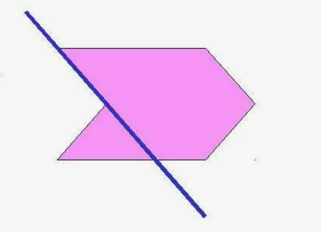

Многоугольник – фигура, состоящая из нескольких точек (больше двух) и соответствующего количества отрезков, которые их последовательно соединяют. Эти точки называются вершинами многоугольника, а отрезки – сторонами. При этом никакие две смежные стороны не лежат на одной прямой и никакие две несмежные стороны не пересекаются.
Многоуго́льник — геометрическая фигура, обычно определяемая как часть плоскости, ограниченная замкнутой ломаной.
Правильный многоугольник – это выпуклый многоугольник, у которого все стороны и углы равны.
Многоугольники еще иногда называют n-угольниками, чтобы подчеркнуть, что рассматривается общий случай наличия какого-то неизвестного количества углов (n штук).
Вершина многоугольника – это точка пересечения двух соседних сторон многоугольника.
Сторона многоугольника – это отрезок соединяющий две соседние вершины многоугольника.
Диагональ многоугольника – отрезок, соединяющий любые две не соседние вершины многоугольника.
Соседними вершинами многоугольника называются вершины, принадлежащие одной стороне.
Общая длина всех сторон многоугольника называется его периметром.
Любой многоугольник разделяет плоскость на две части, одна из которых называется внутренней, а другая - внешней областью многоугольника.
Стороны многоугольника называются смежными, если они прилегают к одной вершине.
Выпуклый многоугольник — это многоугольник, который лежит по одну сторону от любой прямой, содержащей его сторону (то есть продолжения сторон многоугольника не пересекают других его сторон).
Невыпуклый многоугольник — это многоугольник, который лежит по разные стороны от прямой, проходящей через две его соседние вершины (то есть продолжение стороны многоугольника пересекает другую его сторону).
В общем случае многоугольник можно назвать n-угольником, это означает, что у данного многоугольника n сторон и n вершин. Сумма углов выпуклого n-угольника равна 180°⋅(n−2)
Любой выпуклый многоугольник можно разделить на треугольники. Количество треугольников на 2 меньше, чем количество сторон в многоугольнике. Сумма внутренних углов любого треугольника равна 180°. Поэтому сумма углов выпуклого n-угольника равна 180°⋅(n−2).
| 3-угольник | 4-угольник | 5-угольник | 6-угольник | 7-угольник | 8-угольник |
| 180°⋅(3−2) | 180°⋅(4−2) | 180°⋅(5−2) | 180°⋅(6−2) | 180°⋅(7−2) | 180°⋅(8−2) |
| 180 | 360 | 540 | 720 | 900 | 1080 |